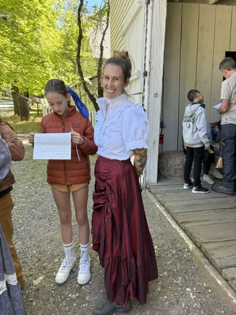
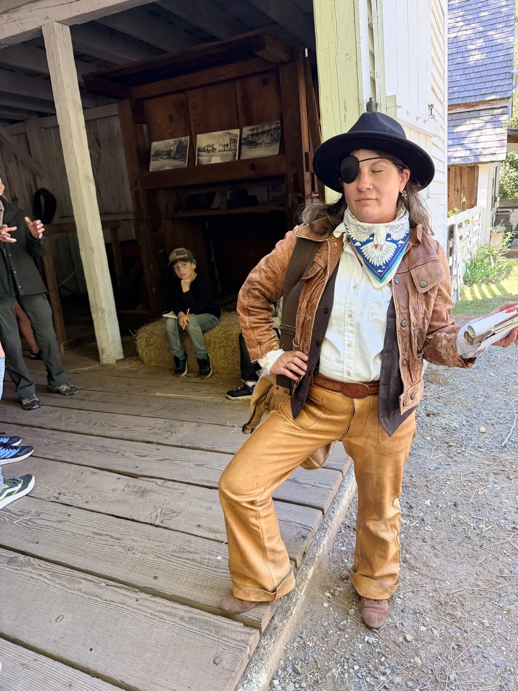
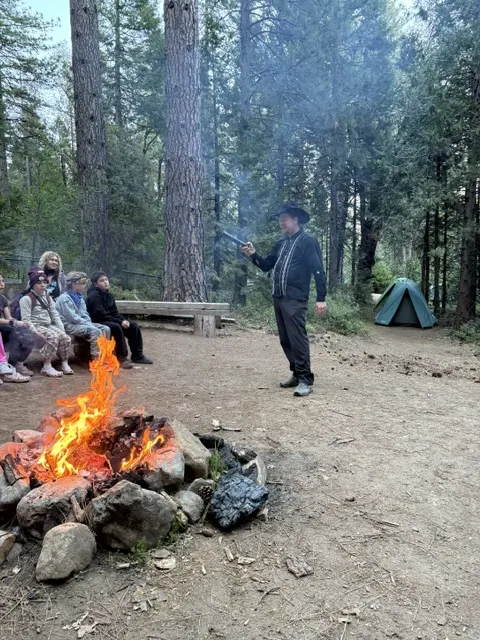

Living History
The Gold Rush wasn't populated by types — it was populated by people. Every one of these characters is based on someone who was actually there.

Saloon · Grass Valley · Gold Rush California
Born Eliza Gilbert, Limerick, Ireland, 1818 — Died New York City, 1861
She couldn't act. She couldn't dance. She said this was the audience's problem. Her first London performance closed to hisses, boos, and catcalls. As far as Lola was concerned, a star was born.
She drifted through Europe accumulating lovers — Franz Liszt, Alexandre Dumas — and a reputation. When Franz Liszt grew exhausted by her, he locked her in their hotel room while she slept and fled, leaving money at the front desk for the furniture he knew she'd smash when she awoke.
In Munich, she charged into King Ludwig I's private study demanding justice from a theater manager who'd fired her. When the King awkwardly asked whether her figure was a work of nature or of art, she snatched scissors from his desk and slit the front of her dress to the waist. She left with a theater engagement. The manager was fired. Ludwig fell desperately in love. He built her a palace with a marble fountain that sprayed perfumed water. Lola effectively ruled Bavaria — introducing Napoleonic law, harassing the Jesuits, alarming the entire continent — until student riots cost Ludwig his crown and Lola caught the midnight train out of town.
At 35 she opened a frontier saloon in Grass Valley, outfitting it with Louis XVI cabinets, ormolu mirrors, Ludwig's jewels, a pet bear, a swan bed, gold leaf everywhere, and every Governor, Senator, or millionaire she could haul through the door. It was, at last, a hit.
Letters found after her death revealed she had been plotting the entire time: Lola intended to cause California to declare independence and crown herself Queen of "Lolaland."
She died at 43 in a wretched New York boardinghouse, alone. Her two children declined to claim the body — one was constrained by the pressures of business; the other was in jail.

Stagecoach Driver · California · 1812–1879
"One-Eyed Charlie" — the first woman to vote in the United States
Charlie drove stage for a living and was good at it — famous for having ended the life of a feared bandit who made the mistake of trying to rob the wrong coach. Charlie wore a patch over one eye, having lost it in a fight with a horse. A scarf around the neck, always. Men's clothes, always.
Nobody questioned it. Charlie was just Charlie — a skilled whip, a steady hand, someone you wanted handling the reins through the mountain passes.
When Charlie died in 1879, the people who came to prepare the body discovered what no one had known: Charlie was a woman. She had dressed as a man her entire adult life.
In 1868, Charlie had voted in a California election. Because everyone thought she was a man, no one stopped her. That made Charlie Parkhurst the first woman to cast a ballot in the United States — fifty-two years before the 19th Amendment gave women the legal right to do so.
She is buried in Aptos, California. Her grave marker reads: "Voted in 1868."

Outlaw · California · 1829–1888(?)
Charles Boles — the gentleman poet bandit
Between 1875 and 1883, Black Bart robbed 28 Wells Fargo stagecoaches. He never fired a shot. He was unfailingly polite to the passengers. He worked alone, always on foot, and always disappeared into the landscape afterward.
At several crime scenes he left a poem, signed Black Bart, the PO8:
"I've labored long and hard for bread,
For honor and for riches,
But on my corns too long you've tread,
You fine-haired sons of bitches."
He was eventually caught — not by a gunfight or a chase, but by a laundry mark on a handkerchief he dropped at a crime scene. A Wells Fargo detective traced it to a laundry in San Francisco. He served six years in San Quentin, was released in 1888, and was never reliably heard from again.
Came to North Bloomfield as a baker, switched to the saloon business after a hand injury. Became one of the wealthiest citizens in town: notary public, agent for the stage lines, mining recorder, philanthropist.
He grubstaked struggling miners — every loan made verbally, every one recorded in his black book. When a debt was past due, Skid produced the book. The miner always paid.
Always in a suit and tie. History buff. Sponsored the town baseball team.
Part-owner of the Smith-Knotwell Drugstore. Could fix sore muscles, stomach aches, coughs, and rashes. Also served as justice of the peace and county board supervisor.
Many remedies of the time contained morphine — a powerful painkiller that didn't treat the illness; you just couldn't feel the pain anymore.
Married Nettie Smith, the founder's daughter, on July 20, 1881. Died of pneumonia at 66. Buried in the North Bloomfield Cemetery.
Came to North Bloomfield to pan for gold. As a skilled blacksmith, he quickly discovered he could make far more money making Penstock Pipes for the Malakoff monitors than sifting gravel.
Made and repaired: hydraulic monitors, Penstock Pipes, horseshoes, pots, pans, farm tools. The mine couldn't run without him.
Called in to solve an impossible problem: the Malakoff pit was filling faster than the Hiller Tunnel could drain it. Smith designed a new drain tunnel — 7,878 feet long, drilled through solid bedrock.
His solution: sink 8 shafts at 1,000-foot intervals, send two crews to the bottom of each shaft digging in opposite directions, 15 crews simultaneously. Completed November 15, 1874 — a full year ahead of schedule. Still considered one of the engineering feats of its era.
Worked down in the diggings where the monitors blasted hillsides from 500 feet away. A watchman was always posted to watch for mudslides. One day the cry came too late — a mudslide covered Dave Bowen completely.
A second slide happened before anyone could reach him.
That second slide uncovered his head. He was alive. The other men dug him out with their bare hands.
A Frenchman, loyal to France but also to North Bloomfield. Always there when needed — pulling teeth, delivering babies, sewing up wounds. Traveled to patients by horse and buggy across rough mountain roads.
Loved music. Played clarinet in the town band. The kind of man a town absolutely depends on and rarely thanks enough.
Designed the Magenta Flume — an aqueduct that carried water across a deep canyon to feed the hydraulic monitors. 1,400 feet long, 160 feet tall, built from local timber in 1859.
When it was completed, both French and American flags were raised, cannons fired salutes, and daring ladies and gentlemen walked across the top of the flume in celebration.
Bookkeeper and paymaster for the Malakoff dam building crew. Kept people on the payroll who didn't exist. Forged the boss's name on checks, then once a month traveled to Nevada City with friends to cash them and have a weekend on the town.
The Gold Rush wasn't only about gold. Wherever money flowed, someone found a way to redirect it.
Made his living by ground sluicing in the ravines and as a watchmaker. Lived in a cabin in the woods with a dozen or more cats.
He loved to dream of flying like the birds. People told tales of how he once built himself a pair of wings, leapt from a high rock, and nearly broke his neck.
During a card game, Willy Blood was shot through the heart. He was 22 years old. Will McKuan was convicted of the crime and sentenced to 10 years at Folsom Prison.
Left Humbug for Marysville on January 10, 1858. Never arrived. His injured dog was found near the river. Then: his hat, his coat, his shoes — with blood on them — near an old mine shaft.
Nobody ever found out what happened.
Drowned in a rain barrel behind the family home. He was two years old.
Life in a Gold Rush boomtown was hard in ways that had nothing to do with gold. The cemetery holds many stories like Eddie's — brief lives, ordinary accidents, the fragility of everything.
Bought 1,535 acres of abandoned claims at depression prices in 1860, convinced San Francisco investors to back him, and built the largest hydraulic mining operation in the world.
The company he built outlasted him by decades. He died by suicide in San Francisco at 45, the year the operation finally reached full capacity.
Co-inventor of hydraulic mining. In 1852, Chabot made a 100-foot hose from strips of saddlebag canvas — the first step toward bringing water to the diggings instead of carrying gravel to the water.
Left the gold fields in 1856. Created San Francisco's first water system. Built the dam on San Leandro Creek — now Lake Chabot. Largely responsible for water systems in Oakland and San Jose.
Suggested attaching a nozzle to the end of Chabot's canvas hose — the moment hydraulic mining was born. Also invented a hydraulic derrick for moving boulders, a platform for prying loose cemented materials, and a device to keep debris out of hydraulic intakes.
Never sought patent rights for any of it.
Lived in the Chinese section of town — the "China Garden." A cross-looking fellow that most kids steered clear of in town.
But get him down by the river and he was an expert panner: with a few motions, he held the pan in one hand and washed the gold, making it look effortless.
The China Garden fed the whole town. While miners scrambled for gold, the Chinese community grew the vegetables everyone ate.
Came from Ireland by way of the Isthmus of Panama. Worked for the North Bloomfield Gravel Mining Company for over 30 years — a hard and dangerous job. His brother Edward owned the dance hall.
Died when a dynamite blast exploded prematurely, at age 57. His daughter Mary had already died of diphtheria at age 8.
Six months at sea around Cape Horn. 183 passengers — all men except one 12-year-old boy. The food was terrible, but the boredom was worse.
Captain Swain — "the wild bull of the sea" — raced another ship through the deadly Strait of Magellan and won by risking everyone's lives. They arrived in California alive, barely, and considered themselves lucky.
Came overland from Sonora — a long, hot journey on foot with one mule to carry supplies. Prospectors from Sonora were among the first to reach the gold fields in summer 1848.
Surprised to find Yankees acting like California had always been theirs, even though it belonged to Mexico until two years earlier. Plans to make money fast and go home.